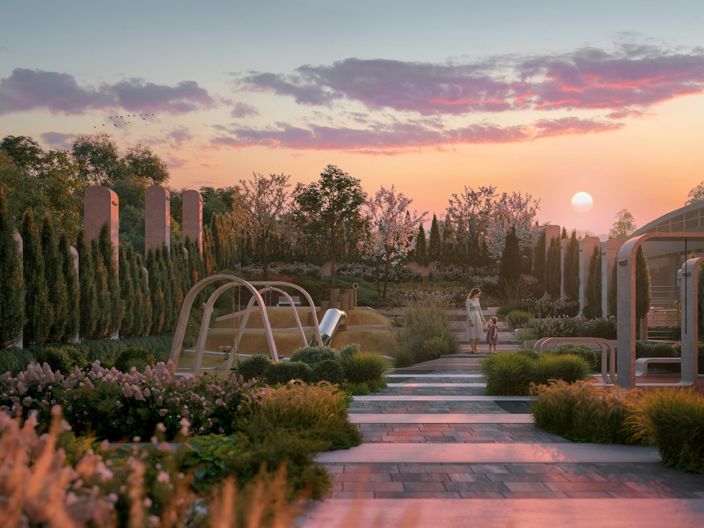
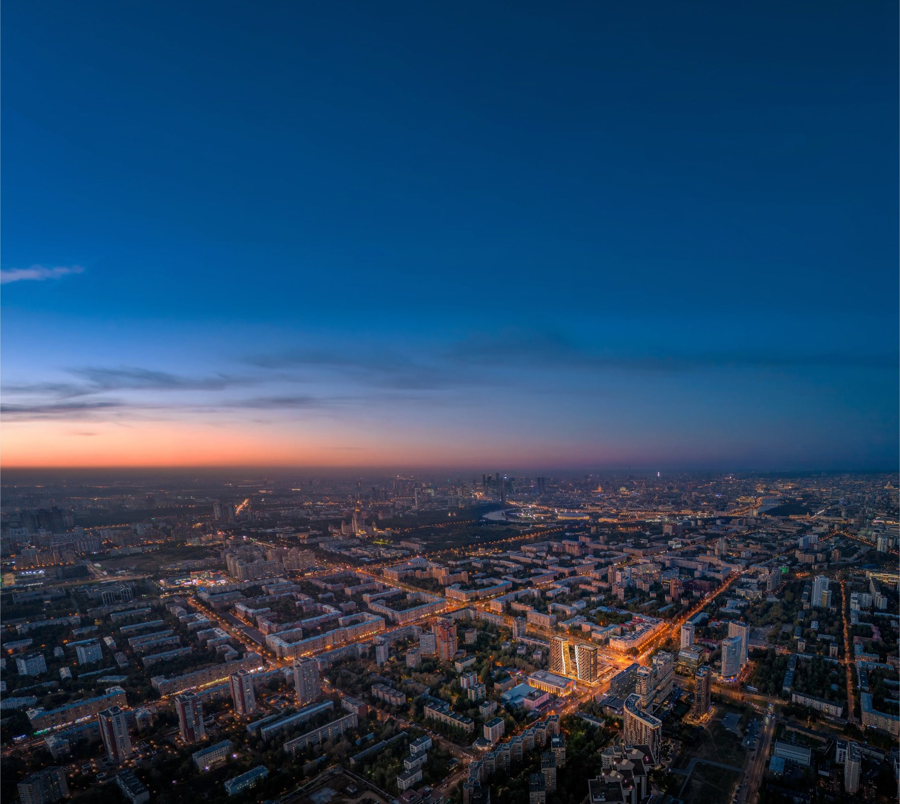

<!-- HTML-ФРАГМЕНТ: 05-gallery.html; не полная страница. -->
<section class="section block project-gallery" id="gallery" aria-labelledby="project-gallery-title"><div class="wrap">
    <div class="section-heading"><div><p class="eyebrow">Фотографии</p><h2 id="project-gallery-title">Галерея проекта</h2></div></div>
    <div class="splide" aria-label="Фотографии жилого комплекса"><div class="splide__track"><ul class="splide__list"><li class="splide__slide"><button class="pg-photo" type="button" data-image="../assets/architecture-detail.jpg" data-caption="Жилой комплекс «Вавилова 64»" aria-label="Увеличить фото 1 проекта Вавилова 64" aria-haspopup="dialog"><span class="pg-expand" aria-hidden="true"><svg viewBox="0 0 24 24" fill="none" stroke="currentColor" stroke-width="1.5" stroke-linecap="round" stroke-linejoin="round" focusable="false"><path d="M8 3H3v5m13-5h5v5M3 16v5h5m13-5v5h-5"/></svg></span></button></li><li class="splide__slide"><button class="pg-photo" type="button" data-image="../assets/garden.jpg" data-caption="Жилой комплекс «Вавилова 64»" aria-label="Увеличить фото 2 проекта Вавилова 64" aria-haspopup="dialog"><span class="pg-expand" aria-hidden="true"><svg viewBox="0 0 24 24" fill="none" stroke="currentColor" stroke-width="1.5" stroke-linecap="round" stroke-linejoin="round" focusable="false"><path d="M8 3H3v5m13-5h5v5M3 16v5h5m13-5v5h-5"/></svg></span></button></li><li class="splide__slide"><button class="pg-photo" type="button" data-image="../assets/lobby-wide.webp" data-caption="Жилой комплекс «Вавилова 64»" aria-label="Увеличить фото 3 проекта Вавилова 64" aria-haspopup="dialog"><span class="pg-expand" aria-hidden="true"><svg viewBox="0 0 24 24" fill="none" stroke="currentColor" stroke-width="1.5" stroke-linecap="round" stroke-linejoin="round" focusable="false"><path d="M8 3H3v5m13-5h5v5M3 16v5h5m13-5v5h-5"/></svg></span></button></li><li class="splide__slide"><button class="pg-photo" type="button" data-image="../assets/lobby.jpg" data-caption="Жилой комплекс «Вавилова 64»" aria-label="Увеличить фото 4 проекта Вавилова 64" aria-haspopup="dialog"><span class="pg-expand" aria-hidden="true"><svg viewBox="0 0 24 24" fill="none" stroke="currentColor" stroke-width="1.5" stroke-linecap="round" stroke-linejoin="round" focusable="false"><path d="M8 3H3v5m13-5h5v5M3 16v5h5m13-5v5h-5"/></svg></span></button></li><li class="splide__slide"><button class="pg-photo" type="button" data-image="../assets/view.jpg" data-caption="Жилой комплекс «Вавилова 64»" aria-label="Увеличить фото 5 проекта Вавилова 64" aria-haspopup="dialog"><span class="pg-expand" aria-hidden="true"><svg viewBox="0 0 24 24" fill="none" stroke="currentColor" stroke-width="1.5" stroke-linecap="round" stroke-linejoin="round" focusable="false"><path d="M8 3H3v5m13-5h5v5M3 16v5h5m13-5v5h-5"/></svg></span></button></li><li class="splide__slide"><button class="pg-photo" type="button" data-image="../assets/panorama.jpg" data-caption="Жилой комплекс «Вавилова 64»" aria-label="Увеличить фото 6 проекта Вавилова 64" aria-haspopup="dialog"><span class="pg-expand" aria-hidden="true"><svg viewBox="0 0 24 24" fill="none" stroke="currentColor" stroke-width="1.5" stroke-linecap="round" stroke-linejoin="round" focusable="false"><path d="M8 3H3v5m13-5h5v5M3 16v5h5m13-5v5h-5"/></svg></span></button></li></ul></div></div>
    <div class="pg-footer"><div class="pg-nav"><button class="pg-nav-button" type="button" data-gallery-prev aria-label="Предыдущие фотографии" disabled><svg viewBox="0 0 11 22" width="11" height="22" fill="none" stroke="currentColor" aria-hidden="true" focusable="false"><path d="M9.5 21 1 11 9.5 1"/></svg></button><button class="pg-nav-button" type="button" data-gallery-next aria-label="Следующие фотографии" disabled><svg viewBox="0 0 11 22" width="11" height="22" fill="none" stroke="currentColor" aria-hidden="true" focusable="false"><path d="M1.5 21 10 11 1.5 1"/></svg></button></div></div>
  </div></section>
